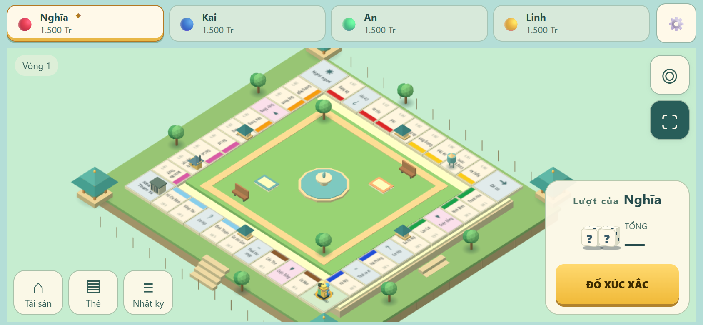
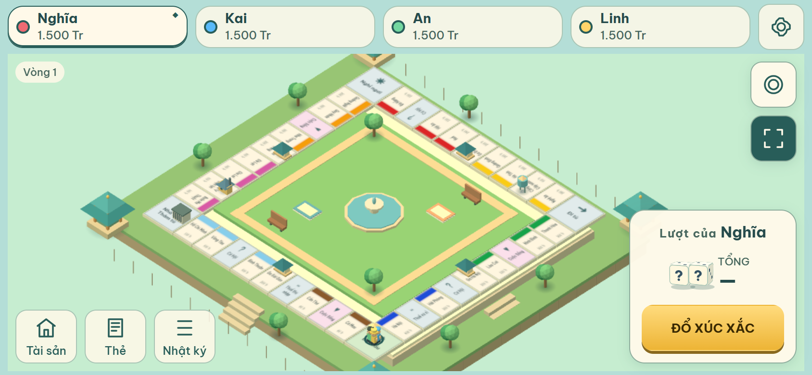
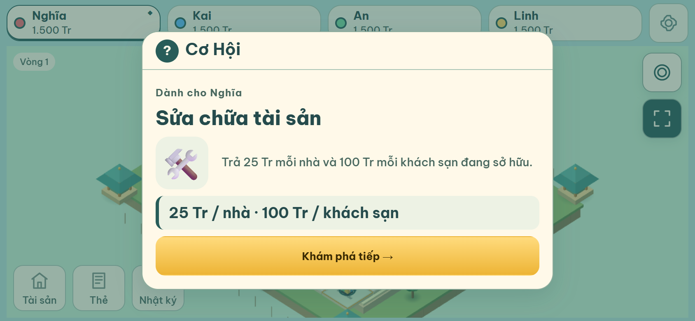
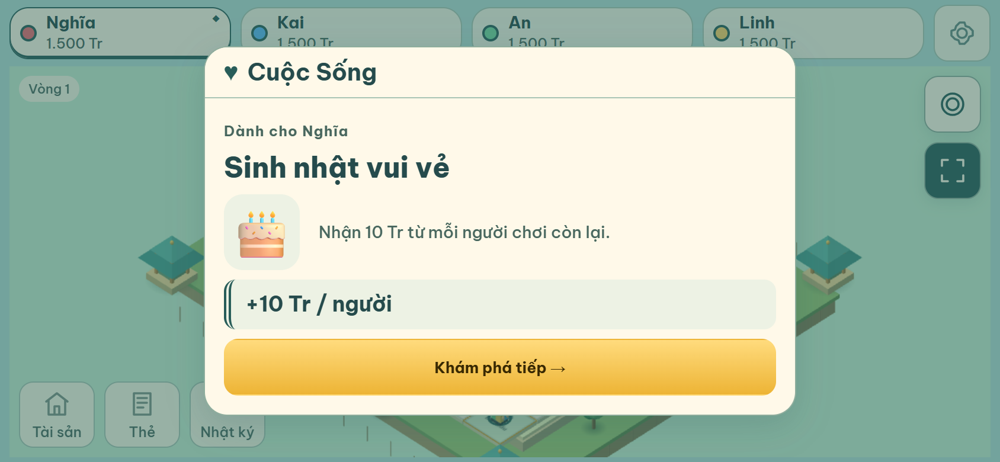
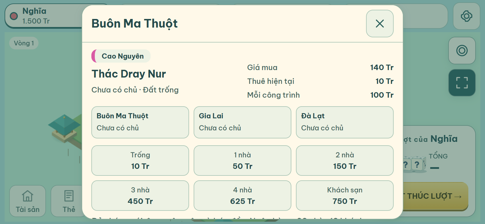
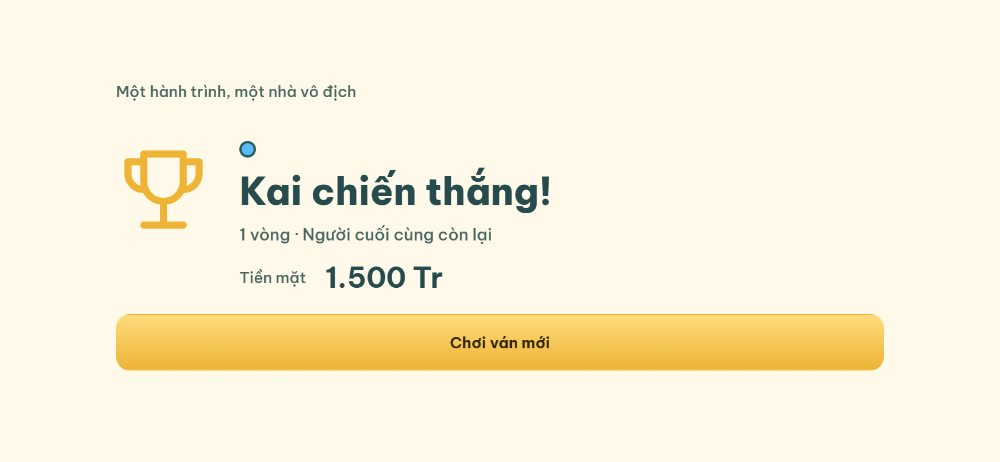

Visual System V3
Giữ board low-poly, Cream / Teal / Gold. Font Be Vietnam Pro, player indicator kiểm soát màu, selected teal và CTA vàng. Gameplay so cùng viewport 844×390, 4 người, trạng thái chưa đổ xúc xắc.





